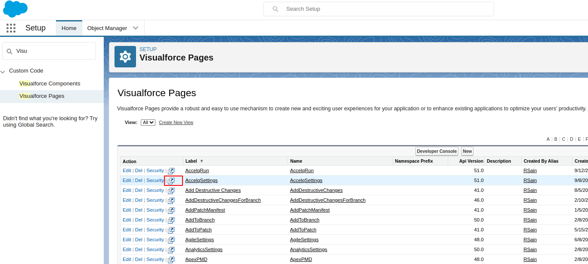
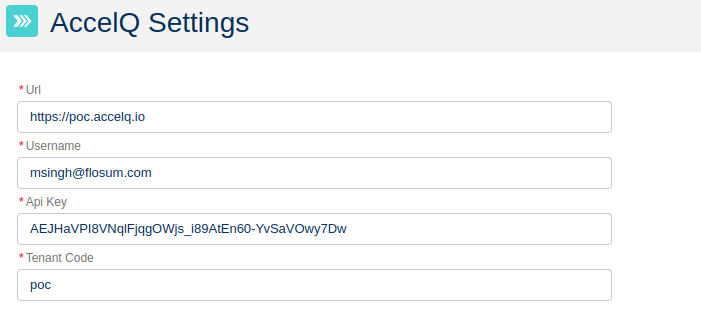
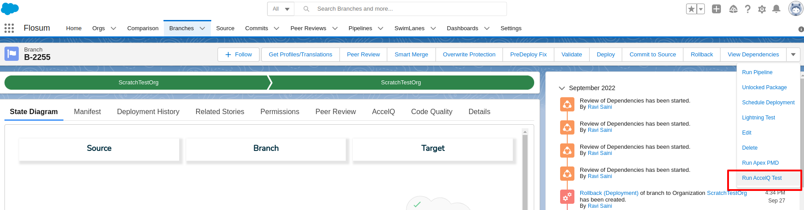
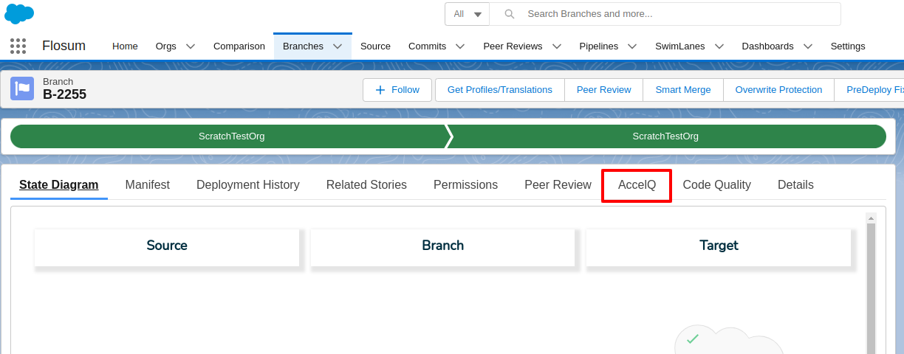
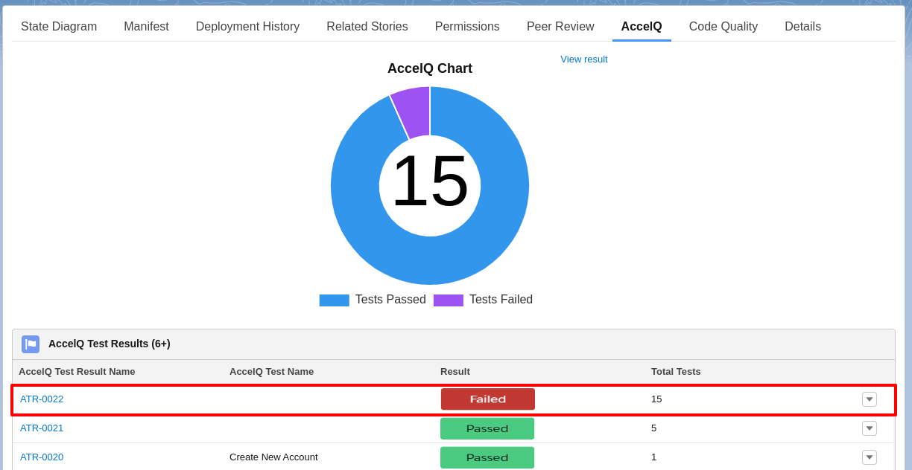
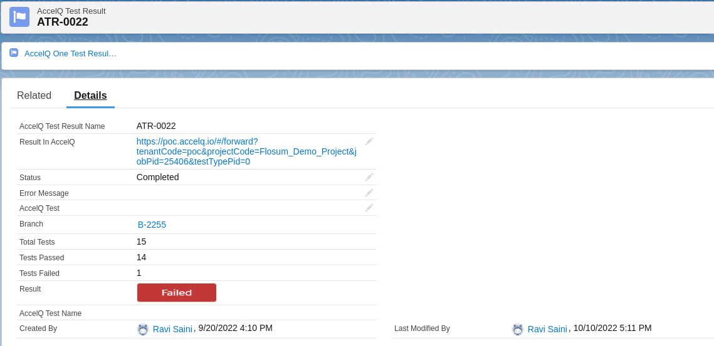
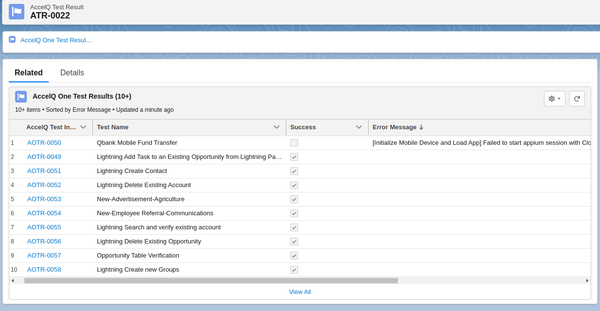
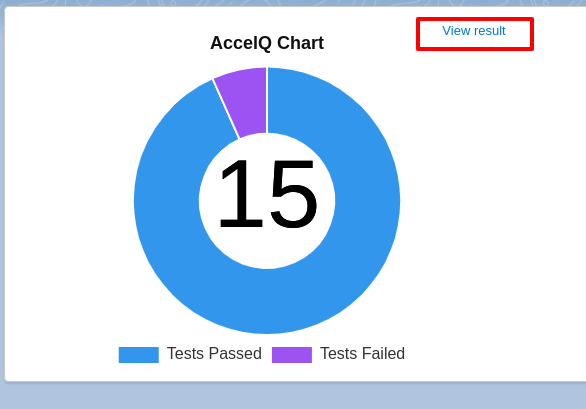

In Flosum select the Setup Gear. In the Quickfind box, search for 'Visualforce Pages'. Click Preview for the “AccelQ Settings” page.

Create Connection
Fill fields for connection 
Click the “Test Connection” button. If the test was successful, click the "Save connection" button.
Adding Test
Click the “Add Test” button at the bottom of the page. Fill Test fields
Click the “Save” button
AccelQ Settings Demo
AccelQ Run Test
AccelQ Run Test
Go to the “Branches” tab. Go to one of the branches. Click the “Run AccelQ Test” button.  Choose one of the Tests in the “Test Search” input and click the “Run Test” button.
View Test Result
Go to the “AccelQ” tab. 
Go to one of the Test Results 
On the Details tab, you can see the details of the test, on the Related tab, you can view detailed information about each test. 
To see the result in AccelQ, click View Result in AccelQ Chart. 